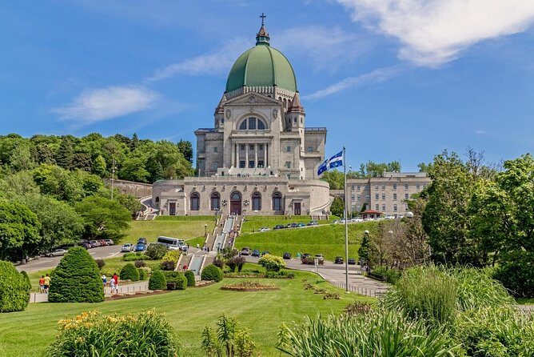

Learn about nature and science! There are 5 museums to explore!
Jardin Botanique: Time to touch grass. It is a giant garden with all sorts of living plants 🌱 (there's also hummingbirds)
Biodome: lazy travel 😎. Spending the day there basically feels like you traveled the entire America continent 🌎! You can explore all the different climates and biodiversities there!
Insectarium: see a bunch of creepy crawlies 🪳 and there is a butterfly room too 🦋! If your lucky the butterflies might land on you (maybe wear perfume)
Planetarium: discover astronomy secrets 🪐 (I never went but I'm going to go there!!)
Biosphere: It's the Epcot thing 🪩. learn about the current evironmental issues and protect our planet!
Interactive museum for alll ages 🧪.
😃 Literally always so fun (Even if I went there so many times)

Personally I don't like history but if you do this is a must go.
If you don't then come here anyways because there's a lot of fun souvenir shops 🛍️. There's also a ferris wheel.
support local economy 🥺.
Random amusement park. It's really fun (not scary at all).
Go on the goliath it's the best one 🎢.
I don't know what's so interesting about it but it's a very old and impressive building.
It's on mount royal(?) so it's also nice to take a walk there. My school is across from it (also old building) so you can come and say hi!
 honorable mention:1181 Saint-Catherine St W. It's for claw machine addicts 🦀 (no scam)
Be ready to lose all your money folks